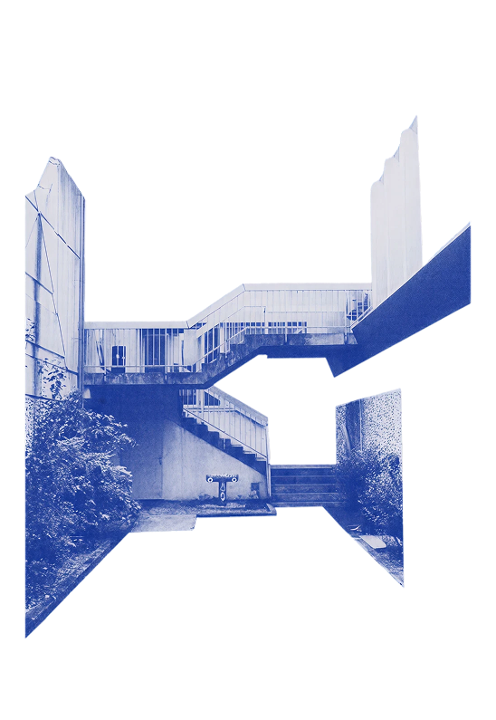
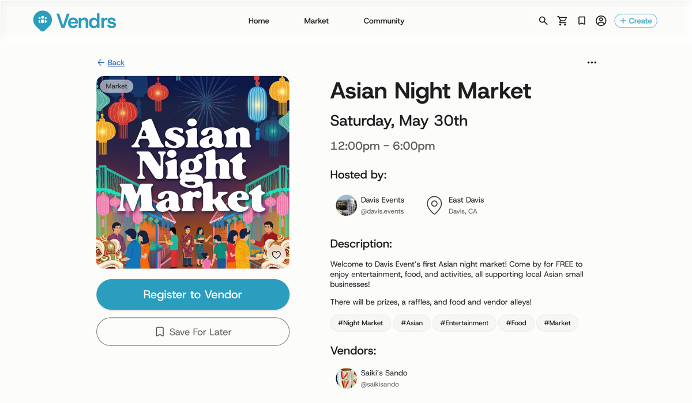
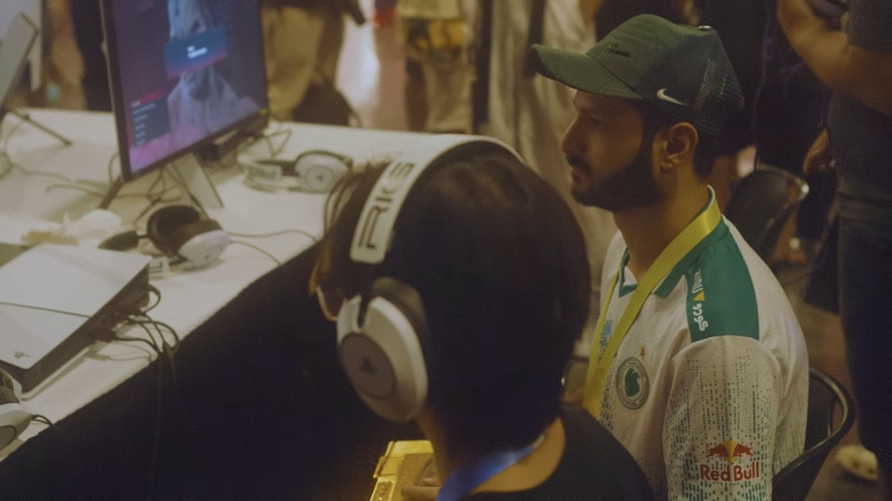

product designer building user-centered digital experiences.
fourth-year design undergrad @ UC Davis, currently designing at Prod. Davis and incoming UX lead at #include. certified energy drink enjoyer.


fourth-year design undergrad @ UC Davis, currently designing at Prod. Davis and incoming UX lead at #include. certified energy drink enjoyer.


case study · clientvendrs: onboarding and the events map for gen z business owners, from first call to shipped flows.
read the case study case study · client
case study · client
qac gallery: an accessibility-first, artist-forward redesign for an oakland lgbtq+ arts gallery.
read the case study concept
concept
uc davis mobile: rebuilding navigation, events and dining around what students actually open the app for.
read the case study
i'm a product designer from roseville, california, studying design at uc davis. i got here the roundabout way: a high-school graphic design class, then two years of computer science, before i admitted the thing i actually loved was design.
i care about quiet, intuitive design: the kind where nobody notices the work because nothing got in their way. lately that means shipping real flows with clients, and folding ai into how i research and prototype.
six tracks on the site, more on soundcloud.

evo 2026, one set away from being embarrassed on stream.
learning motion in after effects · reading "laws of ux" · rating energy drinks, seriously
slow miles, strava receipts.
mockup only · one font (archivo), one accent (your blue), doodles as the only decoration · nothing on the live site changed